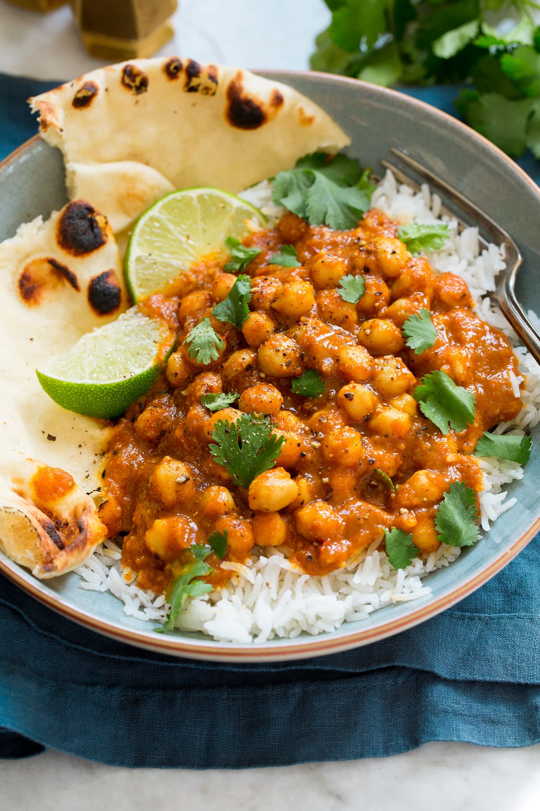

Chickpea Curry

Description
Chickpea Coconut Curry – a healthy, vegan recipe made with hearty chickpeas, rich and creamy coconut milk, an abundance of earthy and warm spices, sweet tomatoes and fresh lime and cilantro. It’s a lunchtime favorite!
ingredients
- Curry powder
- Coconut milk
- Chickpeas
- Lime
- Cilantro
- Tomatos
- Onion
- Rice
Steps
- Measure out spices: Add spices to bowl including coriander, cumin, turmeric, fennel, cinnamon, mustard, cloves, cardamom, paprika, pepper to taste*, and cayenne pepper to taste*.
- Saute vegetables: Heat olive oil in a 12-inch saute pan or a pot over medium-high heat. Add onion and saute until lightly golden brown, about 5 to 6 minutes. Add garlic and ginger and saute 1 minute.
- Briefly saute spices: Reduce heat to medium, add spices and saute 30 seconds.
- Add and simmer tomatoes and coconut milk: Pour and stir in tomatoes and coconut milk. Bring to a simmer then reduce heat to low, cover and let simmer 10 minutes.
- Puree mixture in blender: Carefully pour mixture into a blender. Cover blender with lid and remove center insert from lid and cover with a kitchen towel or several folded layer of paper towels. Blend on low speed until smooth..
- Return sauce to pan, add chickpeas and simmer: Return mixture to pan, add chick peas, season with salt to taste. Cover while leaving lid partially open for steam to escape. Cook over low heat stirring occasionally, until sauce has reduced slightly and chick peas have absorbed some flavor, about 10 minutes.
- Add lime and serve: Stir in lime. Serve warm over rice if desired, garnish with cilantro.